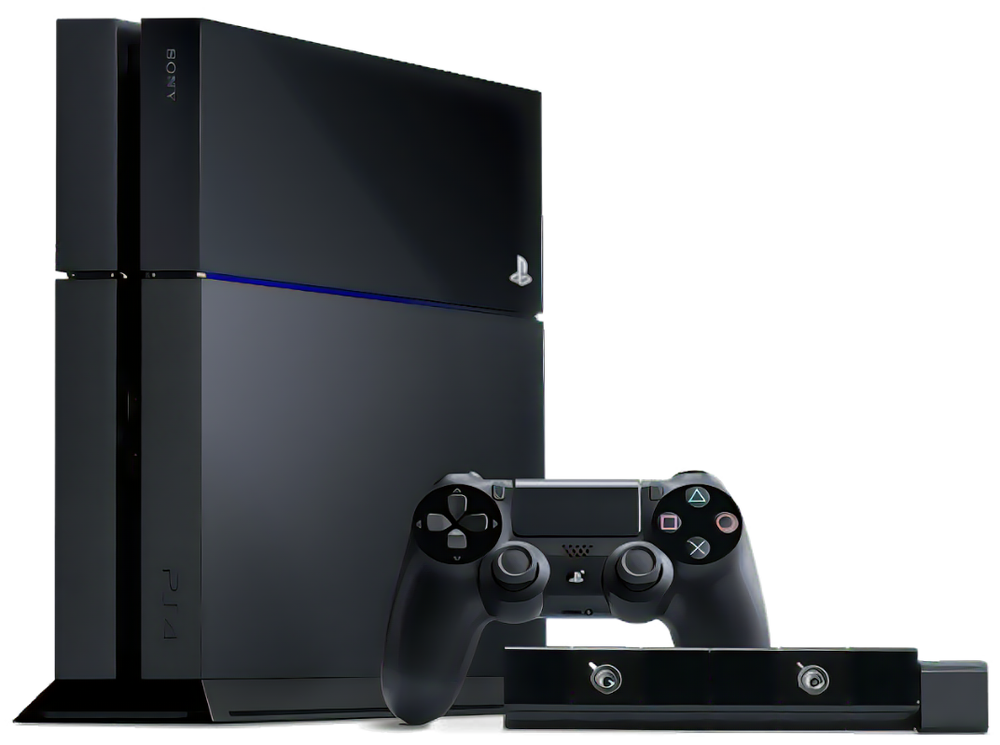
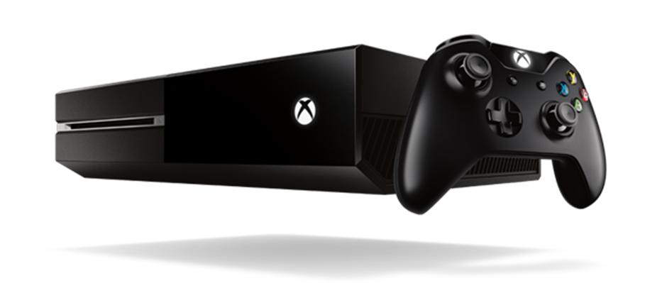
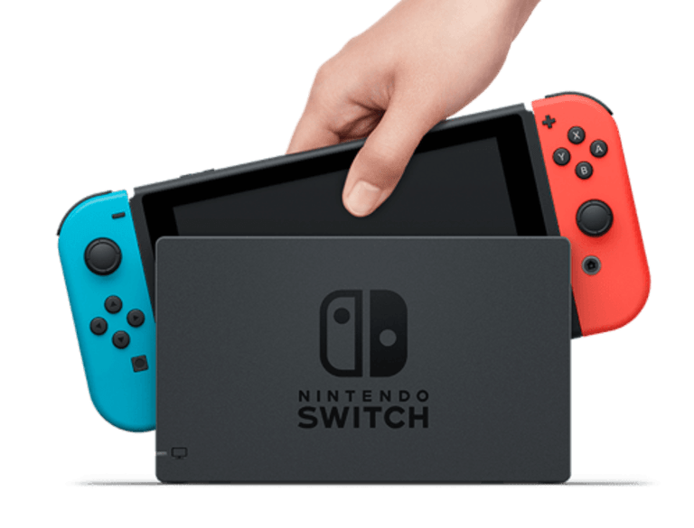

In console generation 8, hardware continues to grow more and more powerful. At this point all consoles, excluding the Wii U, require a paid subscription to play online.

Wii U
In 2012, Nintendo released the Wii U as a direct successor to the widely popular Wii, sporting more powerful hardware and a new library of games. In addition to playing its own exclusive titles, it was also capable of playing titles released for the original Wii through the vWii, an emulated system built into the Wii U. This was possible due to the hardware in the original Wii being present in the Wii U, leading to perfect compatibility with all Wii games and even user-made "homebrew" titles. The Wii U, however, came with some flaws. The name of the console itself commonly led to confusion among consumers who are not very knowledgeable about the gaming scene, with many perceiving it to be just a newer model of Wii. As such, many would purchase Wii U games assuming they would run on original Wii consoles, which was not the case. This, combined with the lack of advertising and marketing for the console, led to very few Wii U sales, and the console being considered a commercial failure. Nintendo would soon learn from their mistakes for the release of their second console in the 8th generation, the Nintendo Switch.
PlayStation 4
Released in 2013 (2014 in Japan), Sony's PlayStation 4 was released to positive reception, with many praising its superior performance compared to that of the Xbox One. Also praised was the decision to not impose the strict digital rights management schemes utilised by Sony's competitors. The PlayStation 4 would eventually go on to become the second best-selling home console of all time by October 2019, only falling behind the PlayStation 2. This position would eventually be taken by the Nintendo Switch, with the PlayStation 4 remaining as the third best-selling home console as of the time of writing.
Xbox One
Microsoft released the Xbox One in 2013 (2014 in some countries). Compared to the Xbox 360, Microsoft handled the marketing of the Xbox One differently, describing it as an "all-in-one entertainment system", hence the consoles name. Because of this, Xbox Ones allowed users to play blu-ray disks, a feature missing from the Xbox 360, and could overlay live television from existing set-top boxes or digital tuners. The Xbox One was praised for its improved controller compared to its predecessor, as well as its multimedia capabilities. It was, however, criticised by some for its inability to run games at graphical fidelity comparable to the PlayStation 4. Many also found the user interface to be unintuitive, though changes made to the interface via software updates received favourable reception.
Nintendo Switch
After the Wii U resulted in commercial failure, the Nintendo Switch was released in 2017 as Nintendo's second Generation 8 console. This console is unique from its competitors as it can be used as a home console when placed in the dock, as well as a handheld when undocked. Due to this hybrid functionality, the Nintendo Switch has become the second best-selling home console of all time with over 129 million units sold. The Switch, however, has been criticised for the requirement of a paid subscription to play online games, a business practice Nintendo has previously not used.